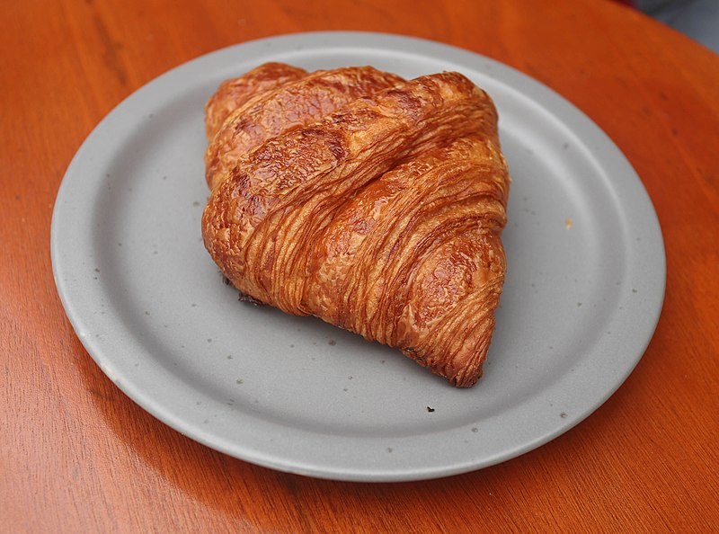
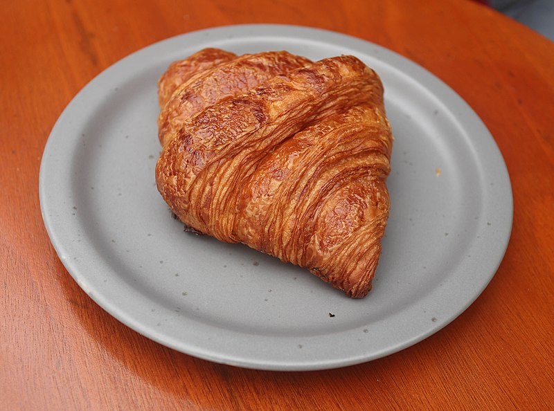

Makanan
Croisant
Croisant atau roti sabit adalah sejenis kue kering (pastry) yang berasal dari Prancis, dinamakan demikian karena bentuknya menyerupai bulan sabit
Croisant atau roti sabit adalah sejenis kue kering (pastry) yang berasal dari Prancis, dinamakan demikian karena bentuknya menyerupai bulan sabit
Croisant (roti sabit) adalah sejenis kue kering (pastry)
Croisant ini berasal dari Perancis dalam artian roti khas Perancis
$3000